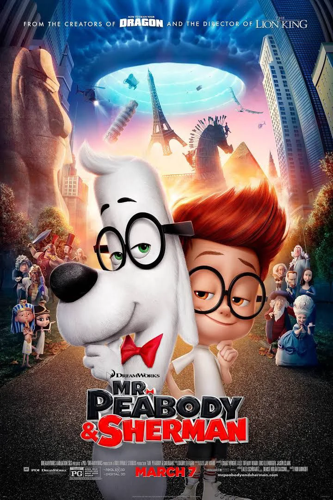

Animation, Adventure, Comedy
2014
92 minutes
Rob Minkoff
Mr. Peabody & Sherman follows the world's smartest dog, Mr. Peabody, and his adopted son Sherman as they travel through history using the WABAC machine. When Sherman accidentally alters the past, the duo must repair the timeline before history is changed forever.